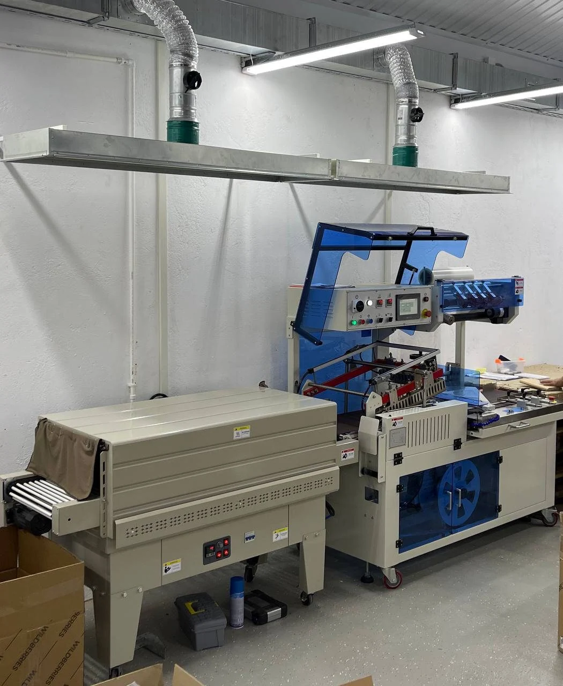
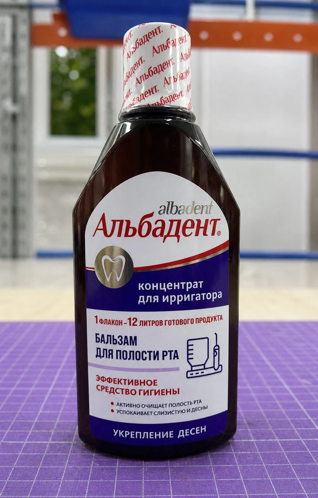
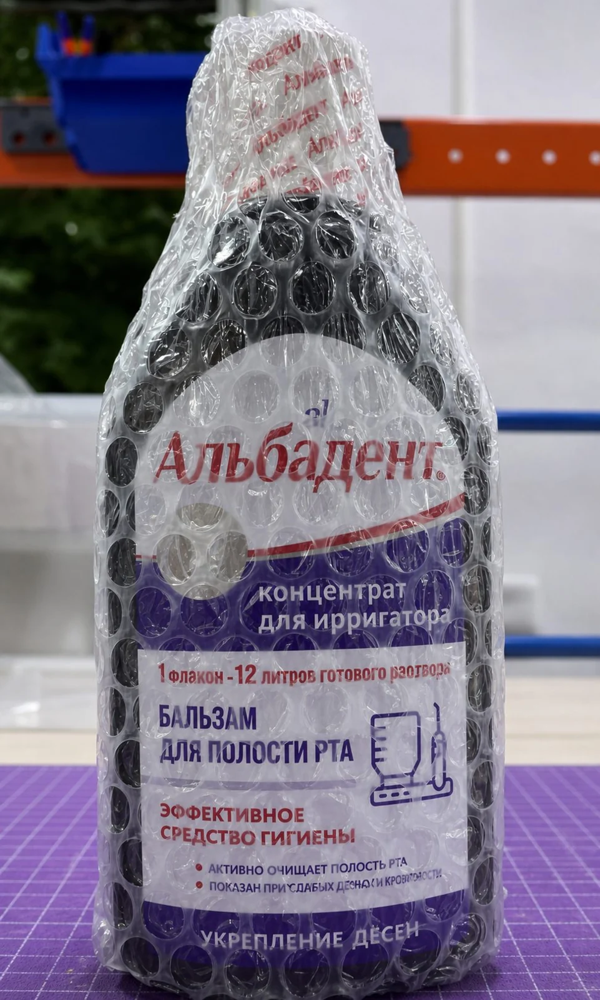
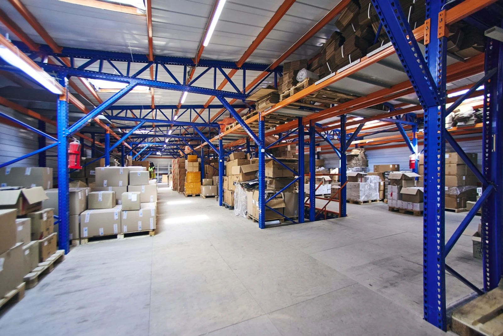
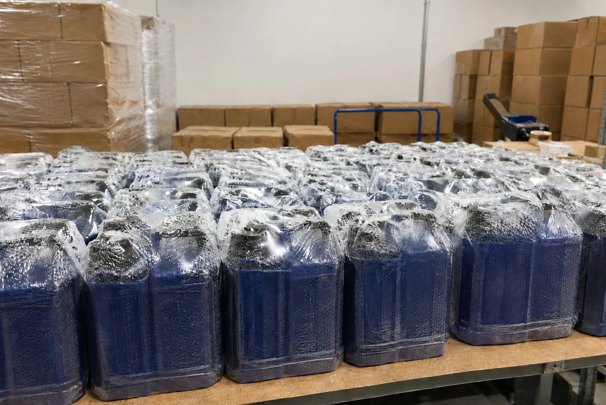

Термоусадка и упаковка в воздушно-пузырьковую пленку для маркетплейсов
Упаковываем партии товаров в термоусадочную и воздушно-пузырьковую пленку для Ozon, Wildberries, Яндекс Маркета и других маркетплейсов.
Используем автоматическую термоусадочную линию и автоматическую линию упаковки в ВПП (пупырка). В зависимости от товара можно использовать один способ упаковки или последовательно 2: сначала термоусадку, затем ВПП.
Работаем как с отдельной операцией по упаковке, так и с полным циклом подготовки партии: приемка, сортировка, проверка товара, упаковка, маркировка, формирование FBO-поставки или обработка по FBS.
- Автоматическая термоусадка от 10 ₽/л
- Упаковка в ВПП от 10 ₽/л
- Крупные партии и поточная обработка
- Тестовый образец перед запуском серии

ВПП или термоусадка: что выбрать
Воздушно-пузырьковая и термоусадочная пленка решают разные задачи. Иногда товару достаточно одной из них, а для части продукции лучше использовать 2 слоя.
| Задача | ВПП | Термоусадка |
|---|---|---|
| Защита от ударов и трения при перевозке | Да | Ограниченно |
| Амортизация товара внутри транспортной упаковки | Да | Нет |
| Фиксация крышки, коробки или комплекта | Ограниченно | Да |
| Плотное облегание товара пленкой | Нет | Да |
| Защитный внешний слой | Да | Да |
| Последовательная двухслойная упаковка | Сначала термоусадка, затем ВПП | |
Схема зависит от формы товара, материала тары, размеров, веса и рисков при перевозке. Перед запуском крупной партии можно сделать тестовый образец и проверить, как упаковка ведет себя на конкретном товаре.
Упаковка в воздушно-пузырьковую пленку, ВПП (пупырка)
ВПП используют, когда товару нужна защита от ударов, трения и других механических воздействий при хранении и перевозке.
Так упаковывают флаконы, банки, тубы, товары в коробках и другую продукцию, для которой повреждение внешней упаковки может привести к браку, возврату или проблемам при приемке на маркетплейсе.
Преп-Центр использует ВПП толщиной 70-110 мкм. Для товаров, которым нужна непрозрачная упаковка, доступна черная ВПП толщиной 90-130 мкм.
На крупных однородных партиях используется автоматическая линия. Максимальная производительность линии упаковки в ВПП составляет до 1 000 изделий в час. Фактическая скорость зависит от габаритов товара, формы упаковки и числа перенастроек между SKU.


Сколько стоит упаковка в ВПП
- товар объемом до 3 л: 10 ₽ за 1 л объема;
- каждый литр свыше 3 л: 6 ₽;
- черная ВПП 90-130 мкм: 15 ₽ за 1 л объема.
Цены указаны без НДС.
Термоусадочная упаковка товара
Термоусадочная пленка плотно облегает товар после нагрева. Ее используют для фиксации упаковки, дополнительной защиты товара, упаковки комплектов и создания внешнего слоя, на который затем можно нанести маркировку.
В Преп-Центре есть автоматическая термоусадочная линия. Для автоматической упаковки используется пленка 19-25 мкм.
Автоматическая линия подходит для товара размером до 40×30×11 см. Для крупногабаритного товара предусмотрена ручная термоусадочная упаковка.
Перед запуском серии проверяем товар на тестовом образце. Это особенно актуально для пластиковой тары: температура и скорость линии должны подходить конкретному материалу и не деформировать флакон, банку или другую упаковку.
Сколько стоит термоусадка
- автоматическая термоусадка товара до 1 л: 10 ₽ за 1 л объема;
- каждый литр свыше 1 л: 5 ₽;
- ручная термоусадочная упаковка крупного товара: 15 ₽ за 1 л объема.
Цены указаны без НДС. Итоговый расчет зависит от габаритов, объема партии, количества SKU и дополнительных операций.
Когда нужны термоусадка и ВПП одновременно
Двухслойная упаковка применяется, когда у товара есть сразу несколько рисков.
Например, термоусадочная пленка может фиксировать крышку и создавать дополнительный защитный слой вокруг флакона. После этого ВПП (пупырка) амортизирует удары и защищает товар от трения при перевозке.
Такую схему Преп-Центр использовал при подготовке партии строительной химии из 5 200 единиц.
Сначала каждый пригодный флакон проходил автоматическую термоусадочную линию. Затем продукцию упаковывали на автоматической линии в ВПП. Перед серийным запуском для каждого формата тары были сделаны тестовые образцы и настроено оборудование.
В результате 5 180 единиц получили 2 слоя упаковки.
Какие товары упаковываем
Термоусадка и ВПП применяются для разных товарных категорий:
- строительная химия;
- комплекты и подарочные наборы;
- товары в банках, тубах и коробках;
- другие товары, которым нужна дополнительная защита или фиксация упаковки.
Для химической продукции до приемки согласовываем состав, класс опасности, температурный режим и требования к хранению. Аэрозоли, растворители, легковоспламеняющиеся и некоторые сильно пахнущие составы требуют отдельного согласования.
Как проходит упаковка партии
Принимаем и пересчитываем товар
Проводим приемку, распределяем продукцию по SKU и сверяем фактическое количество.
Проверяем состояние товара
По согласованному ТЗ проверяем тару, крышки, внешний вид и другие параметры. Проблемные единицы отделяем до упаковки.
Подбираем схему упаковки
Определяем, нужна ли ВПП, термоусадка или последовательная упаковка в 2 слоя. Для новых форматов товара готовим тестовый образец.
Запускаем партию
Однородные партии подходящего формата обрабатываем на автоматических линиях. При необходимости для крупного товара используем ручную термоусадку.
Наносим маркировку
Можем выполнить печать и наклейку штрихкодов и этикеток маркетплейсов, а для маркируемых категорий выполнить печать, нанесение и учет готовых КИЗ «Честного знака».
Проверяем и укладываем товар
Контролируем качество упаковки и считываемость маркировки, затем укладываем продукцию в транспортные короба.
Готовим отгрузку
После упаковки можем сформировать поставку и отправить товар на Ozon, Wildberries или Яндекс Маркет по FBO либо продолжить обработку заказов по FBS.

Ограничения, которые нужно учитывать
Способ упаковки лучше согласовать до поступления всей партии на склад.
Для термоусадки имеет значение устойчивость товара и его упаковки к температуре. Некоторые виды пластиковой тары могут деформироваться, поэтому для нового формата сначала делаем тестовый образец.
При работе с жидкими и химическими товарами дополнительно учитываем:
- состояние и герметичность заводской тары;
- материал флакона, банки или тубы;
- габариты товара;
- состав и класс опасности продукции;
- требования к температуре и хранению;
- количество SKU и различия между ними.
Протекающие, вскрытые или деформированные товары отделяются от основной партии. Возможность дальнейшей обработки согласовывается с клиентом.
Цены на ВПП и термоусадочную упаковку
| Операция | Цена |
|---|---|
| Упаковка в ВПП 70-110 мкм до 3 л | 10 ₽/л |
| Каждый литр ВПП свыше 3 л | 6 ₽/л |
| Черная ВПП 90-130 мкм | 15 ₽/л |
| Автоматическая термоусадка до 1 л | 10 ₽/л |
| Каждый литр автоматической термоусадки свыше 1 л | 5 ₽/л |
| Ручная термоусадка крупного товара | 15 ₽/л |
Цены указаны без НДС.
Упаковку можно заказать как отдельную услугу или включить в полный цикл подготовки товара к маркетплейсу. Приемка, сортировка, маркировка, комплектация, короба, хранение и доставка рассчитываются отдельно по выбранному набору операций.
Реальный кейс: 5 180 единиц в термоусадке и ВПП за 3 дня
Преп-Центр принял сезонную партию строительной химии: грунтовки, гидрофобизаторы, очистители, защитные составы и монтажные клеи в пластиковой таре объемом от 250 мл до 1 л.
На входном контроле сотрудники обнаружили 9 единиц со следами протекания и 11 флаконов с деформированной тарой. Их исключили из поставки. Еще у 14 флаконов докрутили крышки.
После проверки вся пригодная партия прошла 2 автоматические линии:
- термоусадочную упаковку для фиксации крышки и дополнительной защиты флакона;
- упаковку в ВПП для защиты от ударов и трения.
На этой партии средняя фактическая скорость линии ВПП составила около 690 единиц в час.
За 3 рабочих дня Преп-Центр подготовил 5 180 единиц, сформировал 148 усиленных коробов и 4 поставки для Ozon и Wildberries. Поставки были приняты без замечаний к упаковке и маркировке. После отгрузки клиент не зафиксировал протечек или повреждений, связанных с перевозкой продукции.
Посмотреть полный кейс строительной химии
Частые вопросы
Что лучше для маркетплейса: ВПП или термоусадочная пленка?
Это зависит от задачи. ВПП лучше защищает от ударов и трения. Термоусадочная пленка плотно облегает товар и подходит для фиксации упаковки, крышек или комплектов. Для некоторых товаров используем обе пленки последовательно.
Сколько стоит упаковать товар в ВПП (пупырка)?
Упаковка в обычную ВПП толщиной 70-110 мкм для товара объемом до 3 л стоит 10 ₽ за 1 л объема. Каждый литр свыше 3 л стоит 6 ₽. Черная ВПП 90-130 мкм стоит 15 ₽ за 1 л. Цены без НДС.
Сколько стоит термоусадочная упаковка?
Автоматическая термоусадка товара до 1 л стоит 10 ₽ за 1 л объема. Каждый последующий литр стоит 5 ₽. Ручная термоусадка крупного товара стоит 15 ₽ за 1 л. Цены без НДС.
Можно заказать только ВПП или только термоусадку?
Да. Можно заказать одну операцию либо включить упаковку в комплексную подготовку товара: приемку, сортировку, маркировку, комплектацию и отгрузку.
Когда используют сразу термоусадку и ВПП?
Такой вариант подходит товарам, которым одновременно нужны фиксация и защита от механических повреждений. В кейсе со строительной химией сначала фиксировали флаконы термоусадочной пленкой, а затем упаковывали их в ВПП.
Можно упаковывать в термоусадку шампуни, гели и другие жидкие товары?
Можно, если тара и сам товар допускают выбранный температурный режим. Перед серийной обработкой нового формата проверяем тестовый образец. Для дополнительной защиты от ударов после термоусадки можно использовать ВПП (пупырка).
Можно ли после упаковки сразу нанести этикетки маркетплейса?
Да. Преп-Центр может напечатать и нанести необходимые штрихкоды и этикетки, проверить их считываемость и подготовить товар к дальнейшей отгрузке.
Как быстро можно упаковать крупную партию?
Срок зависит от товара, габаритов, количества SKU и набора операций. Например, реальную партию из 5 180 единиц строительной химии с последовательной термоусадкой и ВПП мы полностью подготовили за 3 рабочих дня. Перед запуском крупной партии оцениваем товар и рассчитываем срок.
Вы можете после упаковки отвезти товар на маркетплейс?
Да. После упаковки и маркировки Преп-Центр может сформировать FBO-поставку на Ozon, Wildberries или Яндекс Маркет. Также работаем с FBS-заказами.
Рассчитаем стоимость упаковки вашей партии
Пришлите:
- фото товара и заводской упаковки;
- размеры одной единицы;
- количество товара и число SKU;
- какую упаковку рассматриваете: термоусадку, ВПП или 2 слоя;
- маркетплейс и предполагаемый срок отгрузки.
Менеджер рассчитает стоимость операций и подскажет подходящую схему упаковки.
Обсудить упаковкуДля крупного срочного тиража можно заранее рассчитать поточную обработку партии 10 000+ единиц.